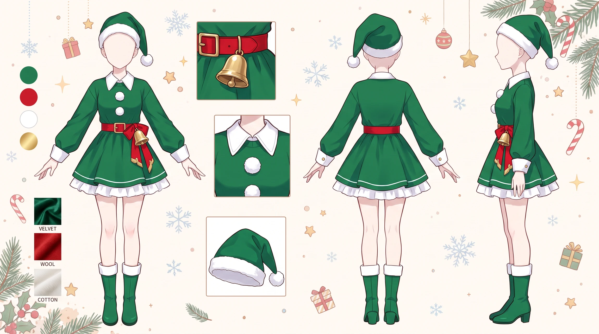
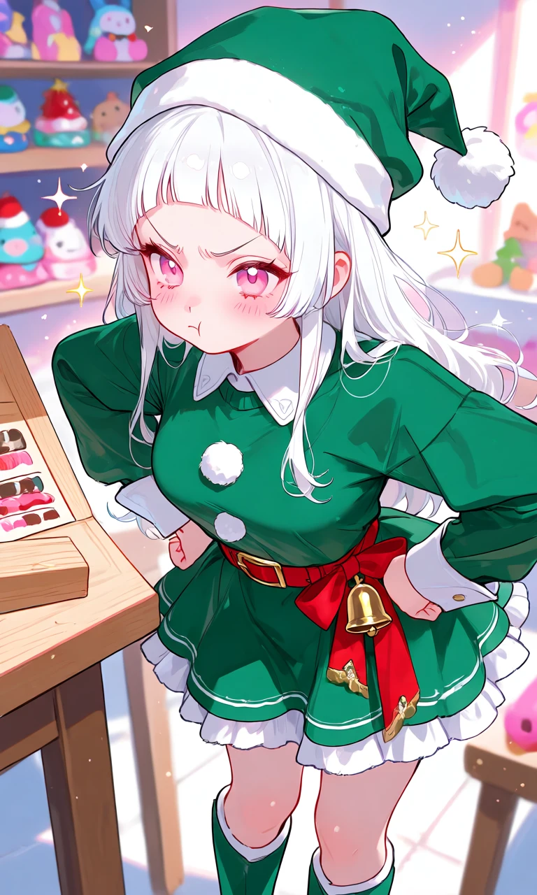
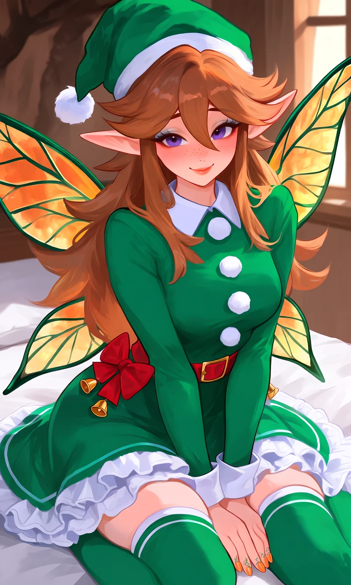

Jinglebell Darling

Outfit Prompt
A festive green sweater dress with long sleeves, a white pointed collar, white cuffs, and fluffy white pom-pom buttons down the chest. A red belt with a gold buckle cinches the waist, accented by a large red ribbon bow at one hip. The flared green skirt falls over layers of white ruffles, with dangling gold bells adding playful detail. A floppy pointed green hat with a wide white brim and white pom-pom, matching green boots with white trim, and cute festive accessories complete the outfit.
Outfit Examples



